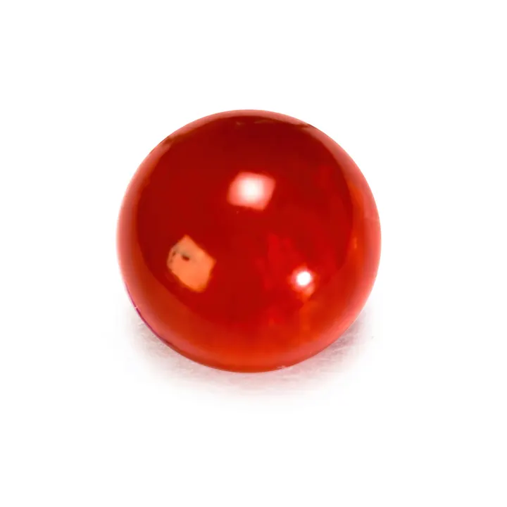

玳瑁與貝殼寶石：海洋的斑斕
玳瑁的斑點、硨磲的純白、鮑魚貝的虹彩——海洋把最美的斑斕，都寫在殼上。

核心定義
玳瑁（tortoiseshell）是玳瑁海龜的甲殼（角蛋白質）——琥珀色底＋褐色斑點，質地溫潤可熱塑成形，曾是眼鏡框與髮飾的經典材料。但玳瑁海龜極度瀕危，國際貿易被 CITES 全面禁止——現代「玳瑁」多為合法舊件或仿品。
貝殼寶石：硨磲（giant clam，白色純淨、佛教七寶之一）、鮑魚貝（abalone，虹彩）、珍珠貝（mother of pearl）——碳酸鈣質、溫潤斑斕，是海洋貝殼的寶石化使用。硨磲近年也面臨保育壓力，需注意來源。
特徵與分類
| 材料 | 本質 | 特徵 |
|---|---|---|
| 玳瑁 | 海龜甲殼（角蛋白） | 琥珀底褐斑、熱塑 |
| 硨磲 | 硨磲貝殼（碳酸鈣） | 純白、溫潤 |
| 鮑魚貝 | 鮑魚殼（碳酸鈣） | 虹彩斑斕 |
| 珍珠貝 | 貝殼內層 | 虹彩珠光 |
玳瑁的鑑定：琥珀底＋褐色斑點（天然分布自然）、熱針（角蛋白燒焦有毛髮味）、比重約 1.3——塑料仿玳瑁熱針刺鼻、斑點呆板。硨磲鑑定：碳酸鈣（酸冒泡）、比重約 2.7、白中帶天然紋路。
科學原理
玳瑁是角蛋白質（與毛髮指甲同類）——所以熱針測試有「毛髮燒焦味」，且具熱塑性（加熱可塑形）——這正是它能做眼鏡框的物理基礎。玳瑁的斑點是角蛋白層的色素沉積——天然斑點自然過渡，仿品呆板。
貝殼寶石的科學：碳酸鈣（文石/方解石）＋有機基質——鮑魚貝的虹彩來自文石薄層的光干涉（與珍珠同原理）；硨磲的純白來自緻密的碳酸鈣層。貝殼寶石怕酸、怕熱、怕乾燥——保養是關鍵。
鑑定與鑑別方法
- 熱針測試：角蛋白毛髮味 vs 塑膠刺鼻
- 看斑點：玳瑁自然漸層 vs 仿品呆板
- 酸測試：碳酸鈣冒泡（貝殼類）
- 掂比重：玳瑁輕（1.3）、硨磲重（2.7）
- 來源確認：保育物種須合法文件
市場行情與保養建議
市場現況：玳瑁貿易被禁後，市場上的「玳瑁」多為：合法舊件（有文件）、賽璐珞/塑膠仿品（稱「賽璐珞玳瑁」）。硨磲在華人市場（佛教飾品）熱度高，但部分國家限採——來源合法性是購買前提。
提醒：碰到「玳瑁」與「硨磲」，先問「來源文件」——保育物種的交易，證書不是可選項，是法律要求。
常見誤區
玳瑁海龜極度瀕危、CITES 全面禁止國際貿易——沒有合法文件的玳瑁製品，買賣都觸法。
硨磲數量銳減、多國限採——它也是需要來源證明的保育材料。漂亮不等於可以隨便交易。
冷知識
玳瑁的熱塑性讓它成為經典眼鏡框材料——輕、溫潤、可塑形，曾是上流社會的標配。
文石薄層的光干涉產生彩虹光——鮑魚貝的斑斕，是與珍珠相同的「薄膜光學」。
反直覺觀點
玳瑁的斑斕源自瀕危海龜——它的美越是獨特，保育的意義越大。現代的「玳瑁美學」，應該用合法替代品延續。
賽璐珞仿玳瑁從 19 世紀就存在——「仿品」的歷史比很多真品更久。它誠實標示，反而是安全選擇。